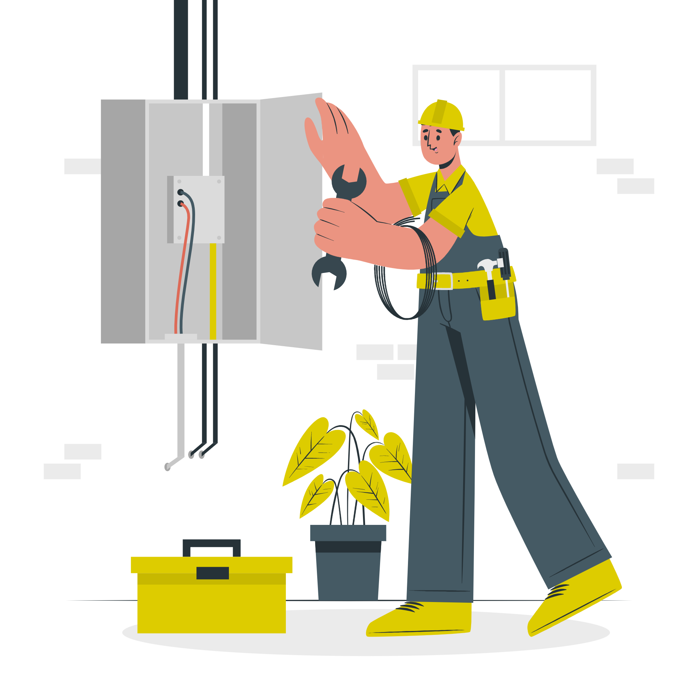
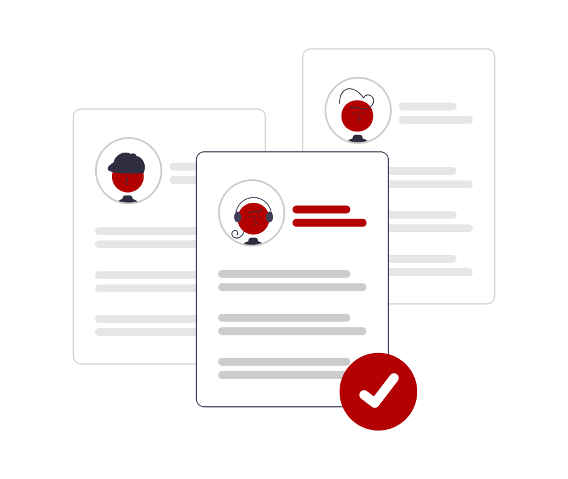

Correção de Fator de Potência
Motores, transformadores, reatores de lâmpadas, fornos de indução, entre outras cargas, consomem energia reativa indutiva. As cargas indutivas necessitam de campo eletromagnético para o seu funcionamento, por isso sua operação requer dois tipos de potência: potência ativa (que realmente realiza trabalho) e potência reativa (usada apenas para criar e manter os campos eletromagnéticos das cargas indutivas). Resumindo, o Fator de Potência nada mais é que uma medida de quanto da potência elétrica consumida está de fato sendo convertida em trabalho útil. O Fator de Potência mínimo permitido é de 0,92. Conforme REN 414, os montantes de energia elétrica e potência reativas que excederem o limite permitido serão cobrados juntamente ao faturamento regular considerando a equação e as condições definidas na legislação vigente aplicável. A cobrança mensal de multas não é o único problema com o baixo fator de potência, ele provoca sobrecorrente nas instalações ocasionando perda de energia elétrica por efeito joule, aquecendo condutores e equipamentos. A queda de tensão também se torna constante no sistema.
Gestão de Modalidade Tarifária
Economizar com eletricidade é um grande desafio para clientes de qualquer porte e , pensando nisso, a Zener Engenharia oferece para você consultorias que irão fazer você pagar um preço justo pela energia elétrica que você precisa. Todo consumidor sofre alterações em seu perfil de consumo com o passar do tempo em relação ao que foi projetado inicialmente, como por exemplo, com a alteração de cargas instaladas. Essas cargas também podem provocar distúrbios em sua rede elétrica, o que poderá ser cobrado pela concessionária em forma de multas ou ainda, devido à alteração de valores cobrados pela concessionária o consumidor pode passar a pagar valores que não são os mais adequados ao seu perfil. saber se não estão sendo pagos valores desnecessários é preciso fazer um estudo detalhado das instalações e uma análise do contrato, para isso, fazemos comparativos dos valores cobrados e também uma espécie de raio x conforme o Prodist 8 da ANEEL, onde serão medidas todas as grandezas elétricas durante um período de tempo e com base nesses dados poderemos fazer alterações que poderão proporcionar ao consumidor reduções significativas na sua fatura de energia. o melhor, em 95% dos casos o consumidor não gasta nada por este serviço, pelo contrário, nós fazemos com que você tenha redução do valor da sua fatura, ou seja, geramos economia para os nossos clientes.
Energia Solar
Seja independente, produza sua própria energia!
Sistemas Fotovoltaicos: On Grid, Off Grid e Zero Grid Mesmo com todo momento vivido no ano de 2020, fabricantes registram altas nas vendas. O custo e os altos reajustes no valor da energia elétrica, além da questão da sustentabilidade, têm sido fatores importantes na hora de decidir produzir a própria energia. Somos especialistas em sistemas fotovoltaicos, seguimos rigorosamente todas as normas vigentes, trazendo segurança para os nossos sistemas e para os nossos cliente. Trabalhamos com os melhores fabricantes, reconhecidos internacionalmente e que possuem todas as certificações necessárias para homologação junto às concessionárias. Produza sua energia e se torne independente! Solicite um orçamento, nossa equipe está pronta para lhe atender!Não seja bitributado!
Laudo Para Créditos de ICMS
Define os consumos de energia elétrica utilizados nos processos de industrialização e não industrial do contribuinte, expressando-os em índices técnicos necessários à operação de recuperação contábil dos créditos de ICMS. Para ter direito é necessário atender algumas exigências e uma delas é não estar enquadrada no Simples Nacional. São necessárias renovações periódicas anuais para atualização dos índices, necessários em função da expansão das atividades do contribuinte.
Análise Termográfica
Manutenção Preventiva
A manutenção preditiva é um excelente instrumento de gerenciamento da manutenção. Metodologias de monitoramento apoiadas na investigação visual, colaboram para uma melhor gestão da manutenção! Possibilita a redução da manutenção corretiva, além de reduzir o preço das manutenções, o desperdício de energia e contribui para o aumento da eficiência operacional dos sistemas avaliados. Se antecipe aos problemas, evite falhas nas instalações com uma análise termográfica onde será possível identificar problemas e evitar incidentes e paradas na produção que podem gerar grandes prejuízos.
Laudos!
Evite multas, mantenha seus laudos atualizados!
- Laudos Elétricos
- Prontuário das Instalações Elétricas - PIE
- Laudo de Aterramento
- Laudo de Sistemas de Proteção contra Descargas Atmosféricas - SPDA

Fale conosco
Telefone: (84) 99668-9820
E-mail: kleber@zenerengenharia.com.br
Whatsapp: (84) 99668-9820
Atendimento: Segunda a Sexta, das 8:00h às 17:30h.